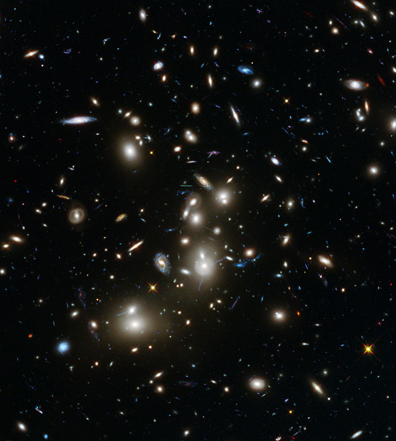
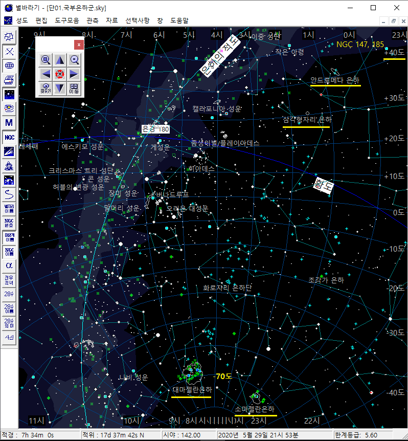

은하들으 모임, 은하군 / 은하단

사람들이 마을을 이루고 모여 살듯이 은하도 서로 모여 있다.
국부은하군처럼 몇 십개의 은하 모임을 은하군이라고 하고,
수백 ~ 수천 개의 은하 모임을 은하단이라 한다.
옆 사진은 허블이 찍은 에비벨 2744 은하단의 모습이다.
다양한 모양과 크기의 은하들이 신기하기만 하다.
더욱이 이러한 은하단은 우주에 셀수 없이 많이 존재한다.
지구에 가까이 있는 주요 은하단 4개는 아래와 같다.
위 그림은 적도좌표계 기준의 3차원 국부은하군 모습이다.
우리 은하와 안드로메다 은하가 양 끝에서 중심을 잡고 있고, 작은 왜소 은하들이 큰 은하 주변을 맴돌고 있다.
왜소 은하들은 큰 은하의 중력권에서 공전을 하거나 큰 은하와 충돌해서 흡수 된다고 한다.
별바라기 활용
위의 3차원 지도를 기억하며, 별바라기에서 안드로메다 은하, 마젤란 은하를 찾아 보자.

- [성도][열기 ...] 메뉴 선택 후, '샘플성도' 디렉토리를 찾아간다.
- 파일명 '041.국부은하군.sky'를 선택한다.
- 전체화면 모드를 해제하고, 옆 그림과 같이 정사각형 형태를 만든다.
- 북위 40도에 위치한 안드로메다 은하와 그 아래에 있는 삼각형자리 은하를 확인한다.
- 남위 70도에 있는 대소 마젤란 은하도 찾아보자. 마젤란 은하를 확대하여 보면 마젤란 은하가 품고 있는 많은 산개 성단이 보이는 것을 확인할 수 있다.
우리나라에서 보이기만 한다면 매우 재미 있는 관측 대상 중 하나일 것이다.
- 3차원 지도에 있는 NGC 147, 185, 6822도 별바라기에서 찾아보자.
- 1920년대 에드윈 허블은 NGC 6822까지의 거리가 약 70만 광년 (지금은 160만 광년으로 확인되었다)인 것을 계산하여,
NGC 6822는 우리 은하의 성운이 아니라 또 다른 은하라고 결정지었다. 1920년대까지만 해도 우리 은하가 우주 전체이고 우주의 크기는 30만 광년이라고 생각하던 때였다.
기타 사항
- 한문에 익숙치 않은 필자에게 국부(局마을국部떼부)은하군이라는 단어가 참으로 어색하다.
국부은하군보다 더 좋은 용어가 있으면 추천 바란다. 우리 은하군? 우리 은하 마을?
- 3차원 국부은하군 지도 출처: https://commons.wikimedia.org/wiki/File:Local_Group_and_nearest_galaxies.jpg
별바라기 홈 최종 변경: 2020년 05월 31일